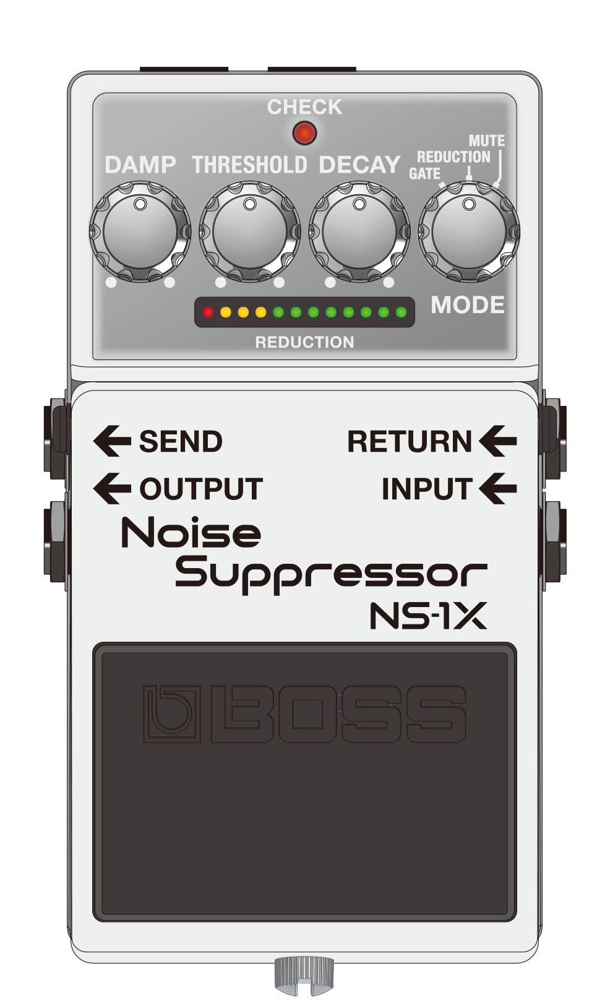
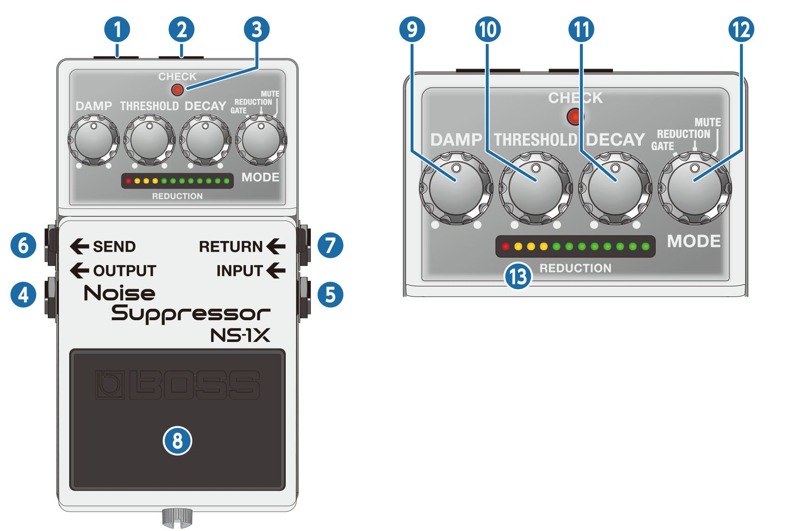
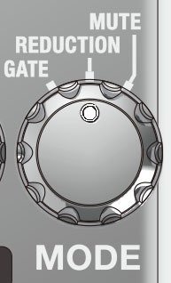
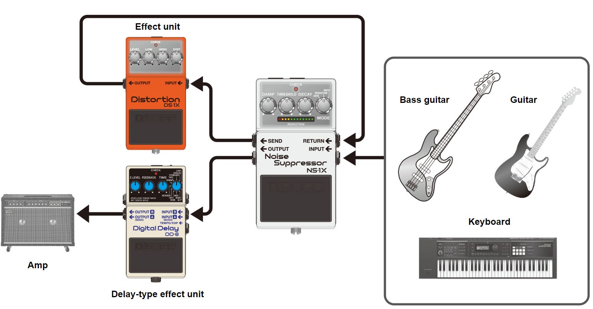
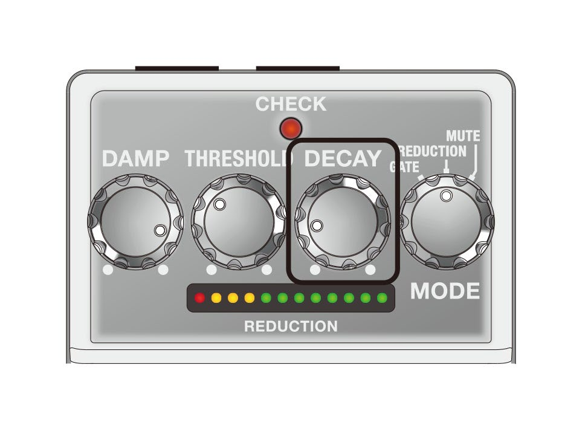
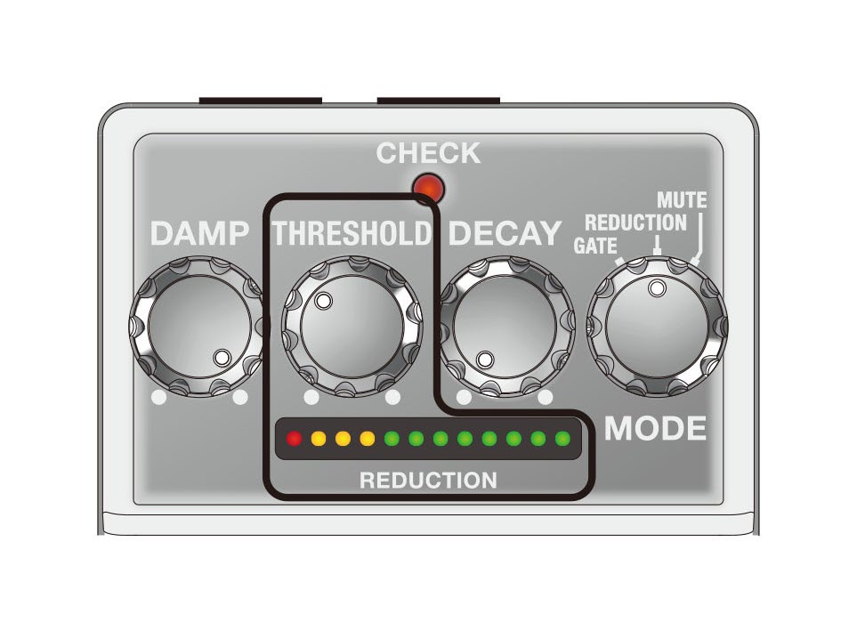
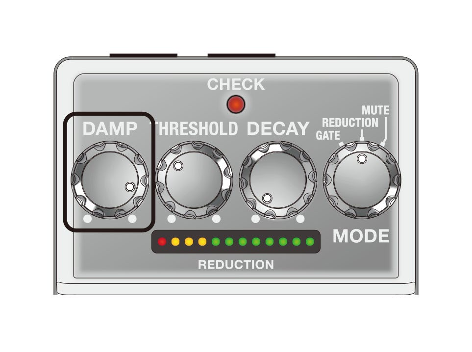
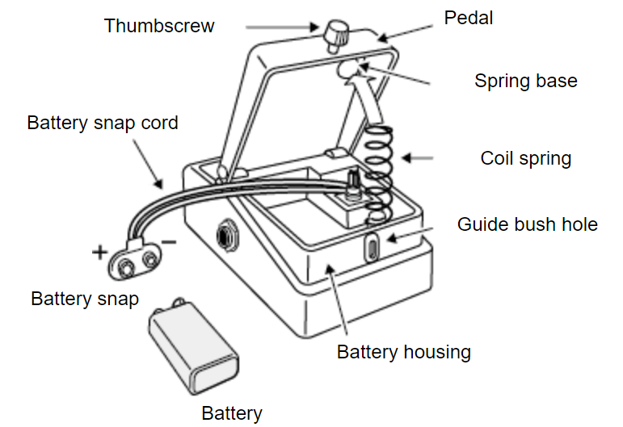

Owner’s Manual

Panel descriptions

| Name | Function | |
|---|---|---|
| 1 | DC OUT jack |
When using an AC adaptor, you can connect the PCS-20A parallel DC cord (sold separately) to supply power from this unit to another 9 V effect unit.
WARNING Connect only specified devices to DC OUT jackConnect only the specified device (PCS-20A) to the DC OUT jack (which provide a supply of power). |
| 2 | DC IN jack |
Accepts connection of an AC Adaptor (PSA series; sold separately). By using an AC Adaptor, you can play without being concerned about how much battery power you have left.
|
| 3 | CHECK indicator |
This indicator shows whether the effect is on/off, as well as the mute on/off status and battery check indication.
|
| 4 | OUTPUT jack | Connect this jack to your amplifier or effect unit. |
| 5 | INPUT jack |
Connect the output of your electric guitar, other musical instruments or effect units to this input jack. Use a 1/4” phone type (TS) – 1/4” phone type (TS) cable to connect to this jack.
|
| 6 | SEND jack | The signal that’s input to the INPUT jack is sent to other effect units through this jack. Connect an effect unit here for which you want to suppress noise such as distortion. |
| 7 | RETURN jack | Use this jack to receive the input signal from the effect unit for which you want to suppress noise such as distortion. |
| 8 | Pedal switch |
This switch turns the effect on/off. In mute mode, this switches between reduction and mute. |
| 9 | [DAMP] knob |
Adjusts the amount of the gate and reduction effects. When this knob is turned all the way clockwise, the effect’s attenuation is at maximum, which clearly distinguishes between the sound you’re playing and the silence. This is optimal when you want the silence to be dynamically distinct. Turning the knob counterclockwise reduces the effect’s attenuation, making the difference between the sound you’re playing and the silence smoother. This is optimal when you are playing softly, such as during more delicate passages. |
| 10 | [THRESHOLD] knob |
Adjusts the signal level at which the gate and reduction effects start. Turn this counterclockwise to make the effect activate at lower input signal levels. Turn this clockwise if there is a lot of noise, and turn this counterclockwise if the noise is not as noticeable. |
| 11 | [DECAY] knob |
Adjusts the time it takes for the sound to attenuate when the input signal level falls below the threshold level. Turn the knob clockwise for a longer attenuation time (decay time). Normally, this should be set all the way counterclockwise. |
| 12 | [MODE] knob |
Switches the mode.
|
| 13 | REDUCTION indicator |
Indicates the strength of the gate and reduction effects. A stronger effect attenuates the sound more, making more indicators light up. All indicators light up when mute is on. |
- To prevent malfunction and equipment failure, always turn down the volume, and turn off all the units before making any connections.
- Do not use connection cables that contain a built-in resistor.
Turning the power on/off
Once everything is properly connected, be sure to follow the procedure below to turn on their power. If you turn on equipment in the wrong order, you risk causing malfunction or equipment failure.
- Before turning the unit on/off, always be sure to turn the volume down. Even with the volume turned down, you might hear some sound when switching the unit on/off. However, this is normal and does not indicate a malfunction.
Turning the power on
Turn on the power to your amp last.
Turning the power off
Turn off the power to your amp first.
Switching between modes
Turn the [MODE] knob to select the mode.

| Mode | Explanation |
|---|---|
| GATE | This effect works best when you’re playing heavily distorted parts interspersed with silence, as well as during breaks in the song. The effect responds quickly, and clearly demarcates the sound of your playing from the silence. |
| REDUCTION | This effect is optimum for suppressing noise, as a reduction effect that doesn’t alter the nuances of what you play. |
| MUTE | This effect is optimal for muting the sound during a performance or between songs. The reduction effect is applied when mute is turned off. |
CHECK indicator status
| Mode | Unlit (off) | Lit (on) |
|---|---|---|
| GATE | Effect off | Gate |
| REDUCTION | Effect off | Reduction |
| MUTE | Reduction | Mute |
You can use the gate effect instead of the reduction effect when mute is turned off.
In mute mode, long-press the pedal switch to switch to the gate effect (the left half of the REDUCTION indicator lights up).
Long-press again to switch to the reduction effect (the right half of the REDUCTION indicator lights up).
The settings are remembered even when the power is switched off.
How to operate this unit
-
Connect each of the effect units.
Although you can connect this unit as the last effect unit in the signal chain, the effect works better when you connect the SEND and RETURN jacks as shown in the illustration.

-
Set the knobs as shown in the illustration.

-
Press the pedal switch to make the CHECK indicator light up (effect on).
The CHECK indicator goes dark only in mute mode.
- Activate the effect unit for which you want to remove noise.
-
When you aren’t playing, the REDUCTION indicator lights up. Adjust the [THRESHOLD] knob until the noise disappears.
The trick is to adjust the knob so that the sound naturally attenuates right around when it stops.
-
Use the [DAMP] knob to adjust the amount of the gate and reduction effect.
At maximum effect, this most clearly demarcates the sound of what you’re playing and the silence. To make the change between sound and silence smoother, turn the knob counterclockwise.

-
If the change between sound and silence is unnatural, turn the [DECAY] knob clockwise.

Changing the batteries
When operating on battery power only, the CHECK indicator gets dimmer when battery power gets too low. Replace the batteries as soon as possible.
- Batteries should always be installed or replaced before connecting any other devices. This way, you can prevent malfunction and damage.

- Hold down the pedal and loosen the thumbscrew, then open the pedal upward.
You don’t need to take the thumbscrew out completely to open the pedal.
- Remove the old battery from the battery housing, and remove the snap cord connected to it.
- Connect the battery snap to the new battery, and place the battery inside the battery housing.
Be sure to carefully observe the battery’s polarity (+ versus -).
- Slip the coil spring onto the spring base on the back of the pedal, and then close the pedal.
Carefully avoid getting the snap cord caught in the pedal, coil spring, and battery housing.
- Finally, hold down the pedal while tightening the thumbscrew into the guide bush hole.
Battery usage
- If you handle the battery improperly, you risk explosion and fluid leakage. Make sure that you carefully observe all of the items related to batteries that are listed in “USING THE UNIT SAFELY” and “IMPORTANT NOTES” (the leaflet “USING THE UNIT SAFELY”).
- Use alkaline batteries if you are running the unit on battery power.
- This device already contains a battery when shipped from the factory. This is a test battery, which may not last as long as a new one.
- The sound may distort when the battery is nearly depleted. This is not a malfunction. If this happens, replace the battery or use the AC adaptor (sold separately).
- When the battery voltage drops, the effects may not work as well as usual, the sound may become unstable, the CHECK indicator may become dimmer, the unit may stop outputting sound and so on. For this reason, you should replace the battery with a new one.
Main specifications
| Nominal Input Level | INPUT, RETURN: -20 dBu |
|---|---|
| Maximum Input Level | INPUT, RETURN: +7 dBu |
| Input Impedance | INPUT, RETURN: 1 MΩ |
| Nominal Output Level | OUTPUT, SEND: -20 dBu |
| Maximum Output Level | OUTPUT, SEND: +7 dBu |
| Output Impedance | OUTPUT, SEND: 1 kΩ |
| Recommended Load Impedance | OUTPUT, SEND: 10 k ohms or greater |
| Bypass | Buffered bypass |
| Controls | Pedal switch, [DAMP] knob, [THRESHOLD] knob, [DECAY] knob, [MODE] knob |
| Indicator | CHECK indicator (Serves also as battery check indicator) REDUCTION indicator |
| Connectors | INPUT jack: 1/4-inch phone type RETURN jack: 1/4-inch phone type OUTPUT jack: 1/4-inch phone type SEND jack: 1/4-inch phone type DC IN jack DC OUT jack |
| Power Supply | Alkaline battery (9 V, 6LR61) AC adaptor (PSA series: sold separately) |
| Current Draw | 60 mA |
| Expected battery life under continuous use | Alkaline: Approx. 6.5 hours * These figures will vary depending on the actual conditions of use. |
| Dimensions | 73 (W) x 129 (D) x 59 (H) mm 2-7/8 (W) x 5-1/8 (D) x 2-3/8 (H) inches |
| Weight (including battery) | 460 g 1 lb 0.3 oz |
| Accessories | Leaflet ("USING THE UNIT SAFELY", "IMPORTANT NOTES", and "Information") Dry battery (9 V, 6LR61) |
| Option (sold separately) | AC adaptor: PSA series |
- 0 dBu = 0.775 Vrms
- This document explains the specifications of the product at the time that the document was issued. For the latest information, refer to the Roland website.